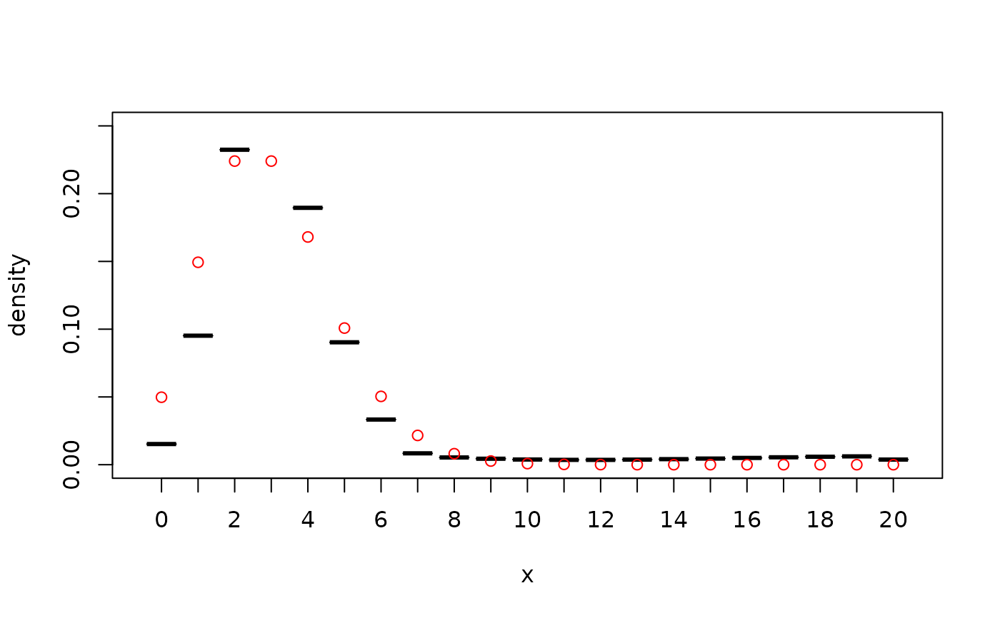

Plotting kde1d objects
# S3 method for kde1d plot(x, ...) # S3 method for kde1d lines(x, ...)
Arguments
| x |
|
|---|---|
| ... | further arguments passed to |
See also
Examples
## continuous data x <- rbeta(100, shape1 = 0.3, shape2 = 0.4) # simulate data fit <- kde1d(x) # unbounded estimate plot(fit, ylim = c(0, 4)) # plot estimate curve(dbeta(x, 0.3, 0.4), # add true density col = "red", add = TRUE ) fit_bounded <- kde1d(x, xmin = 0, xmax = 1) # bounded estimate lines(fit_bounded, col = "green")## discrete data x <- rpois(100, 3) # simulate data x <- ordered(x, levels = 0:20) # declare variable as ordered fit <- kde1d(x) # estimate density plot(fit, ylim = c(0, 0.25)) # plot density estimate points(ordered(0:20, 0:20), # add true density values dpois(0:20, 3), col = "red" ) 